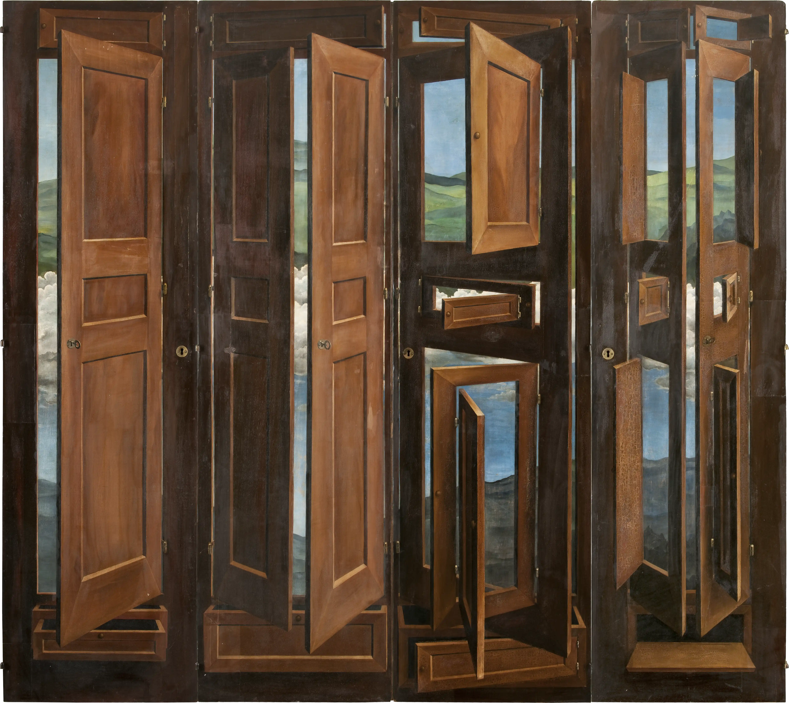

ABRE LAS PUERTAS
A LOS SUEÑOS
Adéntrate en el armario mágico del pintor francés Marcel Jean.
¿Es un armario real? ¿Por qué?
Imagina que tuvieses un armario mágico. ¿Qué guardarías?


Marcel Jean, Armario surrealista,1941